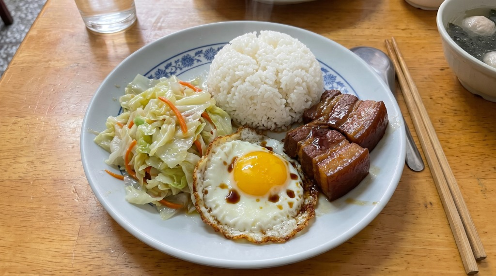
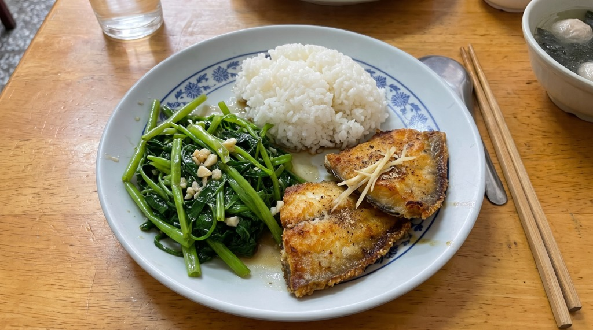

呷好食光
您的飲食紀錄與交流助手
登入帳號
第一次使用嗎? 請先點擊下方註冊帳號
呷好食光
拍攝畫面

尚未經您確認
您吃的是這些嗎?
滷肉、青菜、白飯
菜色辨識失敗了嗎? 請選擇：
菜色與份量確認
修正後菜色：豆腐、青菜、白飯
實際吃了多少？
已選擇：半碗飯
1
豆腐是煎的還是蒸的？
蒸的
口感軟嫩、清淡少油
煎的
金黃香酥、微有用油
已確認：蒸的
來源與說明
系統依確認資訊查詢資料
引用國家資料庫項目
衛生福利部國民健康署「台灣常用食品營養成分資料庫」
已確認：豆腐、半碗飯
已補充：蒸的、少許醬油、少許水煮油
資訊已足夠：已為您推估營養素與鈉含量範圍
245 大卡
推估總熱量
10.5 g
大豆優質蛋白
350~450 mg
推估鈉含量
一般資訊與建議
可詢問醬料是否能另放，兼顧美味與健康
生活小提醒：以上為一般衛教飲食建議，是否採用由您自主決定。
這筆紀錄要如何處理？
私人紀錄不會提供其他用戶查看
刪除前再次確認
餐食日記
11/10
豆腐、青菜、白飯
11/9

白飯、滷肉、蛋、青菜
11/5

白飯、魚肉、青菜
11/10 詳細資料
餐食菜色與份量確認
已確認：豆腐、青菜、白飯
實際食用份量：半碗飯
烹調方式：蒸的
調味資訊：少許醬油、少許水煮油
來源與說明
系統依確認資訊查詢資料
引用國家資料庫項目
衛生福利部國民健康署「台灣常用食品營養成分資料庫」
已依記錄完成營養推估
245 大卡
推估熱量
10.5 g
優質蛋白
350~450 mg
推估鈉含量
選用台灣常用食品營養成分資料庫項目（白飯、傳統板豆腐、空心菜）；調味依記錄推估。
一般資訊與建議
可詢問醬料是否能另放
生活小提醒：以上為一般衛教飲食建議，是否採用由您自主決定。
聊天室
家人A
家人A
>
家人B
家人B
>
家人C
家人C
>
AI
AI助手
>
長者端視角｜林陳桂華 女士